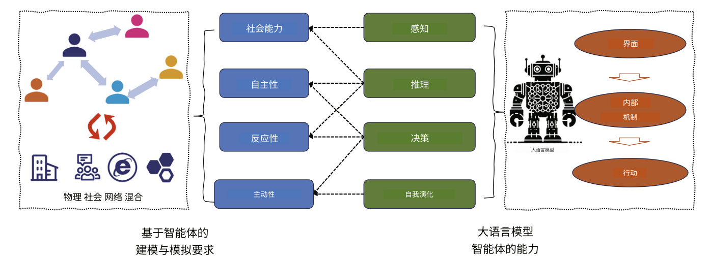
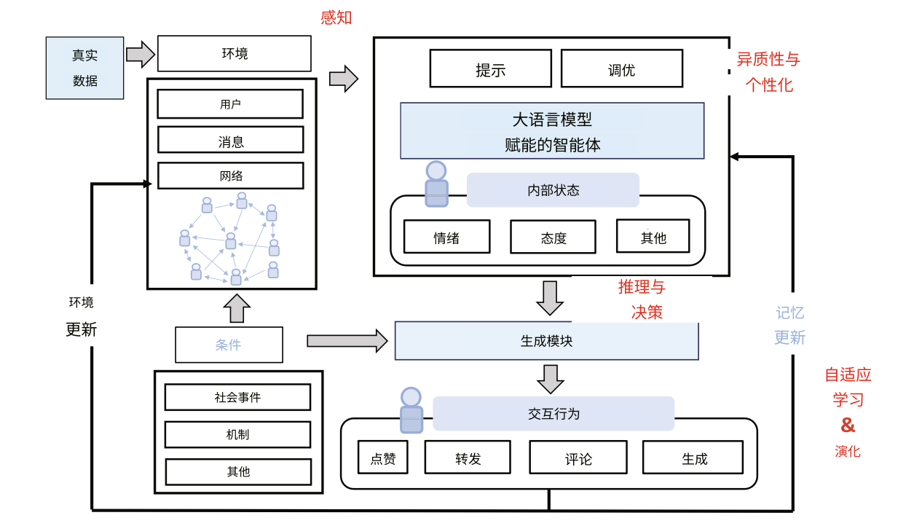
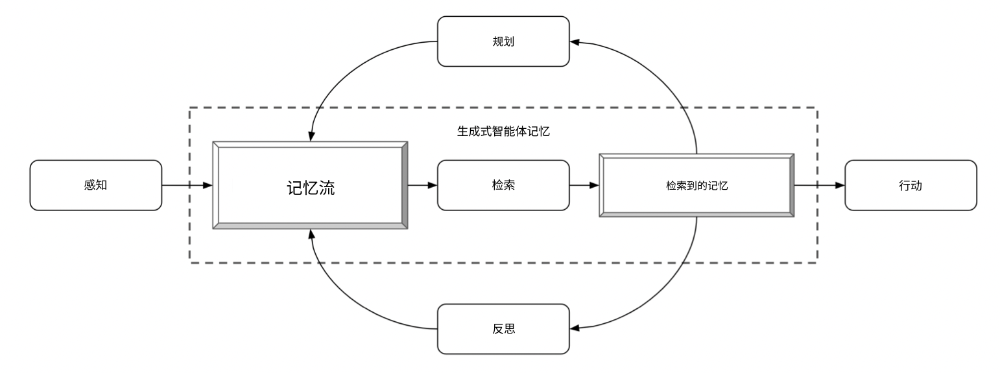
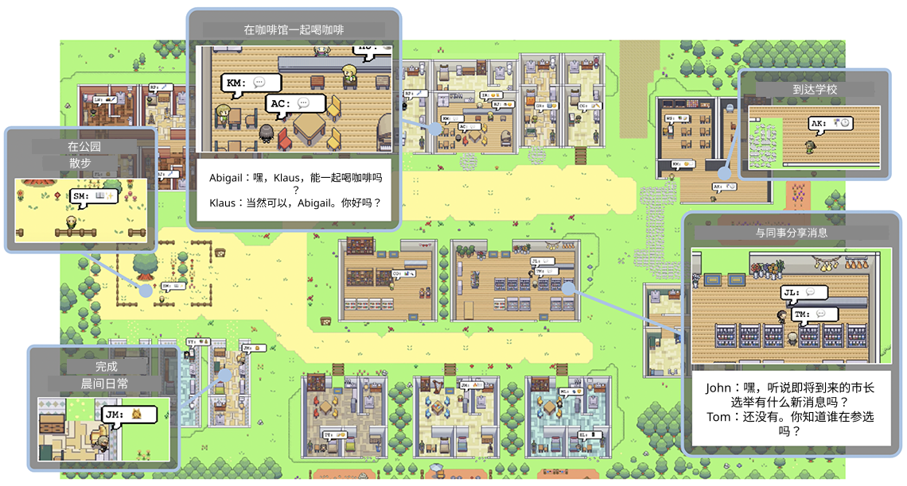
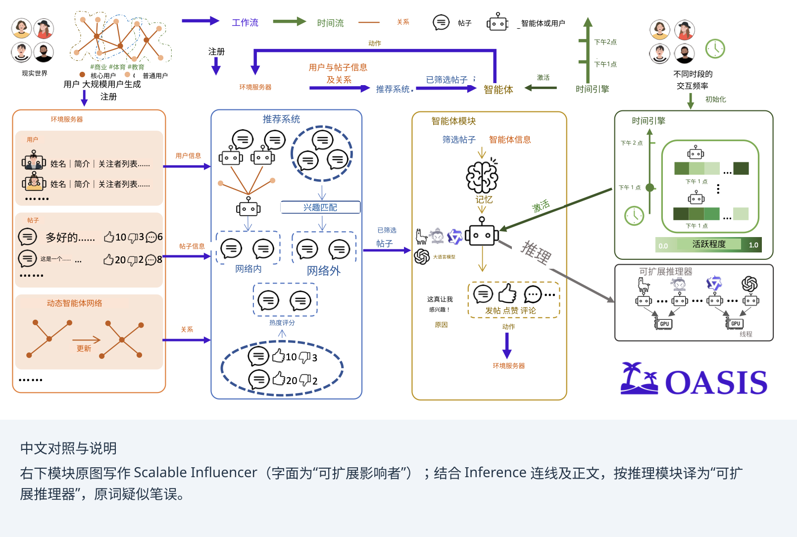
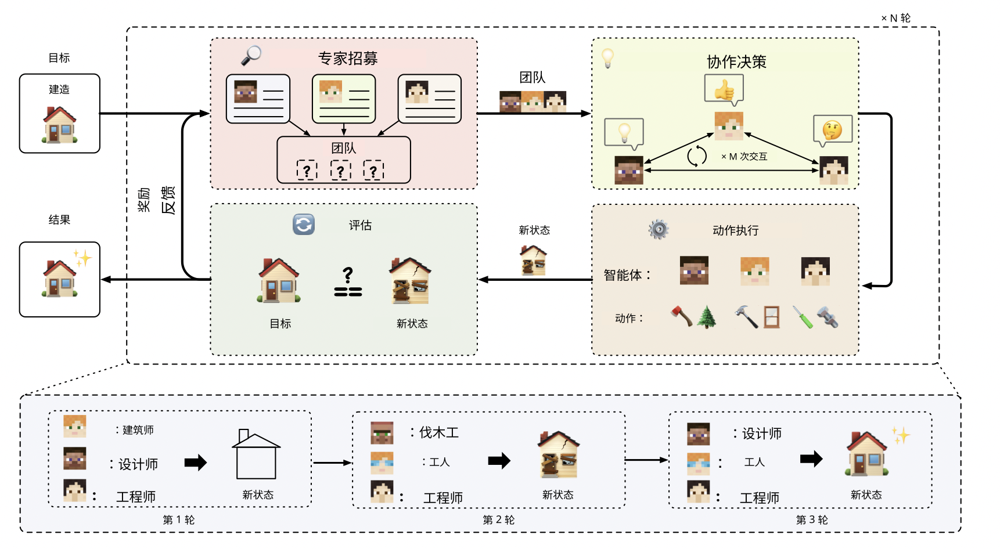
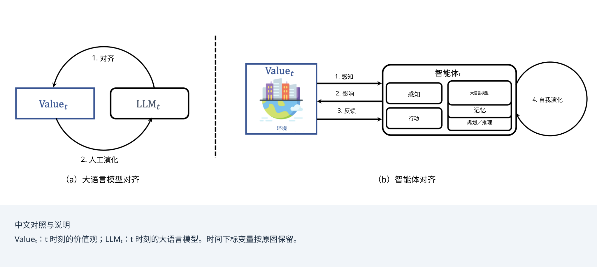
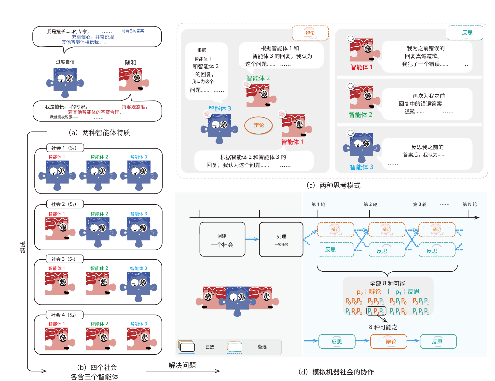

17 / 23 · 中文翻译
第 17 章 多大语言模型系统中的涌现行为
本章目录
17.1 什么是涌现的多智能体行为？
上一章研究了多大语言模型系统，其中每个智能体都被分配了角色，交互则由协议引导。研究问题关注指定结构内部的行为，探究一组智能体以受控方式解决任务的效果如何。本章将智能体置于开放式环境中，研究问题也从“在给定的全局结构下，智能体如何行动和表现？”转向“局部智能体的交互会涌现出怎样的全局结构？”。
正如本书所述，智能体式大语言模型在感知、记忆、推理、决策和自适应学习方面具备增强的能力，也可以表现出各不相同的人格特征 [Gao et al., 2023, Gao et al., 2024]。这些特性也使其适合在未预先分配角色的开放式多智能体模拟中交互，作为社会中人类行为的替代模型。由于大语言模型智能体使用自然语言沟通，研究人员能够阅读和理解此类模拟中的交互。这使研究人员可以观察中间步骤，也让这些模拟比经典框架中的模拟更便于与人类交互比较，契合了社会科学长期以来的研究兴趣。适用于此类模拟的大语言模型智能体的一般结构见图 17.1 和图 17.2。


17.1.1 从基于智能体的建模到生成式智能体社会
对于相互交互的人工智能体群体的研究，已有数十年历史。在基于智能体的建模中，宏观层面的模式和规律由简单智能体之间的局部交互自下而上地产生 [Epstein and Axtell, 1996, Macal and North, 2010]。基于智能体的建模中最有影响力的发现之一，是合作与规范能够在自利智能体群体中涌现 [Axelrod, 1986]。文化演化理论将行为如何通过模仿、沟通和教育在群体中传播进行了形式化描述 [Boyd and Richerson, 1988]。Steels [1995] 的命名博弈表明，即使是共享词汇表——本质上也是一种惯例——也能在没有中央协调的情况下，通过成对交互产生。
在经典的基于智能体的模拟中，智能体遵循人工编写的规则，交换抽象信息，而不像本章的智能体那样使用自然语言。另一个关键差异是，经典智能体并不具备任何在意义上可与大语言模型智能体相提并论的世界背景知识。大语言模型使模拟达到了全然不同的层次：拥有丰富、多样人设的智能体会闲聊、劝说、误解和协商，其方式让人类一看便能理解。模拟基础设施的进步，使这类智能体能够以群体规模运行 [Gao et al., 2024, Yang et al., 2024]。由此产生的新一代生成式智能体社会，为历史悠久的基于智能体的建模研究议程注入了新动力，同时也带来了新的方法论问题与考量。
在第 16.1.3 节中，我们介绍了研究者对多大语言模型系统进行控制的五个轴所构成的连续谱 [Tran et al., 2025]。基于角色的模拟与开放式模拟之间，区别在于程度而非性质。开放式模拟位于连续谱的一端，与角色明确、交互协议化的一端相对。开放式模拟仍包含为结果埋下种子的设计选择，但这些选择的确定性较弱，并有意为新模式的涌现留出空间。研究重点因此发生变化：研究不再评价某项任务或明确目标的完成效果，而是采用开放的观察视角——交互模式本身就是研究目标。开放式模拟以更接近民族志的方法，观察和探索智能体如何行动与交互，因此需要不同的方法论，下面我们将展开讨论。
17.1.2 方法论说明
第 15 章和第 16 章讨论的方法论问题，都同样存在于开放式场景中：提示敏感性、不同运行之间的变异、级联幻觉、弱点的相互强化，以及人类语境中术语的有效性，都会给开放式模拟带来挑战。我们将看到，这种场景会放大某些问题，同时缓解另一些问题。例如，当智能体每次交互时都缺少适用的协议，单个智能体层面的微小变化就可能使整个模拟走上另一条轨迹。这正是开放式模拟既有趣又脆弱的原因。开放式场景引入的一个新问题是，涌现与检索之间可能只有一线之隔：当开放式模拟中的大语言模型智能体趋同于某一规范时，很难判断这一规范究竟是从交互中全新涌现的，还是仅仅从其预训练的世界知识中检索出来的。
Mou et al. [2024]、Savarimuthu et al. [2024] 和 Xi et al. [2023] 对这一新兴领域给出了全面综述。我们将在第 17.2 节讨论基础设施和模拟平台，再在第 17.3 节讨论惯例与规范的涌现，并在第 17.4 节讨论开放世界环境的重要性。最后，在第 17.5 节反思开放式场景的风险。随后，第 18 章提供了一个实践案例，你将在其中亲手操作开放式模拟。
17.2 模拟基础设施
开放式模拟需要基础设施，一方面提供平台，在智能体长时间持续交互和行动的同时记录研究数据；另一方面，这些基础设施应当为现象自下而上的发生以及未知结构的涌现留下足够空间，因此不能构成限制。本节聚焦规模，从居住在虚拟小镇中的单个模拟社区，逐步讨论到包含一百万个智能体的社会。
17.2.1 小世界
Park et al. [2023] 提出了名为 Generative Agents 的系统。Generative Agents 是一个模拟环境，用户可以与其中居住着 25 个基于大语言模型的智能体的小镇进行交互。依据早先提出的社会拟像技术 [Park et al., 2022]，每个智能体初始化时都拥有独特的人设和记忆。系统为每个智能体记录其在模拟中的全部经历和对话，再利用这些记录综合形成更高层次的反思，并规划后续行为（见图 17.3）。
在 Generative Agents 中，智能体的行为有些类似电子游戏《The Sims》中的角色 [Nutt and Railton, 2003]：它们主动交谈、建立关系、传播信息，并协调临时的群体活动（见图 17.4）。请注意，交互会受到用户输入的影响，因此属于半自主交互；模拟在很大程度上没有预设脚本，但并非完全如此。情人节聚会的例子展示了模拟如何运作：用户通过提示发起聚会计划，随后多个智能体相互传递邀请，并带着协调好的计划在正确的时间到场（有些会迟到，就像现实生活一样）。智能体发展出了可信的社交惯例，例如每日安排和闲聊，甚至表现出类似人类的性格特点：一些智能体会欺骗或固执，另一些则表现出合作。这些结果表明，在适当的起始提示下，社会模式能够从动态、半自主的大语言模型交互中涌现。


17.2.2 从数千到百万智能体的社会
将 Generative Agents 架构扩展到 25 个以上的智能体，会引出推理成本问题，以及环境能否足够丰富、容纳数千个智能体活动的问题。11 1 正如你将在下一章亲身体验的，即使只运行具有三个活跃智能体的 Generative Agents 架构变体，在计算上也已经颇具挑战。大型社会模拟需要在可用算力、模拟总运行时间、模拟智能体数量以及单个智能体行为的准确性之间进行权衡。若干平台正在处理这些问题。
AgentSociety 是一种涉及超过 10,000 个智能体的大规模模拟 [Piao et al., 2025b]。它将大语言模型驱动的智能体与真实感城市环境相结合，重点关注出行、就业和消费。它不仅旨在研究日常社会动态，如 Generative Agents 所做的那样，还为计算社会实验提供试验平台。为了达到所需规模，该模拟运行于分布式推理后端，并对智能体行为施加更严格的控制。
OASIS 是面向 Twitter/X 和 Reddit 的可扩展社交媒体模拟器 [Yang et al., 2024]，支持对多达一百万个大语言模型智能体进行建模。它构建于 CAMEL [Li et al., 2023] 之上，并以基于角色的智能体为起点。在 OASIS 中，并非每个智能体动作都需要调用大语言模型，也并非所有智能体始终处于活跃状态。在如此大的规模上，OASIS 展现出多种社会群体现象，包括信息与错误信息的传播、群体极化和从众效应。OASIS 由环境服务器、推荐系统、智能体模块、时间引擎和可扩展推理器构成（见图 17.5）。

Project Sid [Ahn et al., 2024] 将多达 1000 个智能体置于 Minecraft 世界中，并报告了一项引人注目的涌现结果：研究者观察到，智能体发展出专门的经济角色，如农民、矿工和守卫；遵守集体采纳的规则，如征税；还在聚落之间传播文化乃至宗教模因。然而，尽管交互没有预设脚本，上述关于涌现与检索的警示仍适用：可以预期，在驱动各个智能体的大语言模型的训练数据中，已大量描述过所观察到的角色与行为。
17.2.3 作为科学工具的模拟
这些平台除了令人印象深刻地展示可扩展的大语言模型技术之外，如果谨慎使用，还可用于复杂的计算社会实验。研究者已利用模拟的生成式智能体社会，研究社会科学中长期存在的问题（第 17.1 节）。例如，AgentSociety 已用于多项案例研究，包括煽动性消息的传播、极化、全民基本收入政策的效果，以及飓风等外部冲击对社会的影响 [Piao et al., 2025b, Piao et al., 2025a]。在人类群体中开展这些实验可能不符合伦理、不切实际，甚至完全不可能。作者认为，在模拟中可以重复开展这些实验，并且可以在每一步对实验进行调整。
Li et al. [2024b] 进一步以错误信息为例说明了这一方法。其智能体在性别、年龄和大五人格特质方面具有不同特征。22 2 大五人格也称 OCEAN：开放性、尽责性、外向性、宜人性和神经质。一项发现是，鼓励评论并不能显著减少错误信息的传播，而公开为信息标注准确性评分、屏蔽特定意见领袖，则被证实是有效策略，在无标度网络中尤为如此 [Barabási, 2009]。这类研究具有典型模式：通过改变模拟平台来实施某个候选干预，并在多次运行中测量其宏观效果。这些效果能否迁移到人类群体，恰好就是第 17.1.2 节提出的有效性问题；此类模拟最适合被视为生成假设与进行预检的工具，而不能代替实地实验。
一个边界案例：AgentVerse
严格来说，AgentVerse [Chen et al., 2023] 属于第 16 章研究的基于角色的系统。在 AgentVerse 中，问题求解被分成专家招募、协作决策、动作执行和评估四个阶段，反复迭代直至结果令人满意（图 17.6）。我们在此提到它，是因为其设计之外发生的现象：智能体表现出了涌现行为，例如主动向同伴提供帮助的自愿协助，以及在他人批评下调整偏离行为的从众。研究者也观察到了破坏性行为，偶尔会导致不希望出现且有害的结果。宏观行为在角色已设定脚本的模拟中涌现，这说明基于角色与涌现之间的区别是一个连续谱：即使交互协议十分严格的系统，也经常表现出无人有意设计的行为。我们将在第 17.5 节再讨论这一观察所关联的风险。

17.3 涌现的惯例与规范
研究者已在多个开放式多智能体模拟中观察到涌现模式。本节将关注点从基础设施和交互层面，转向惯例与规范层面。
EvolutionaryAgent [Li et al., 2024a] 使用超越基于人类反馈的强化学习的演化方法，研究多智能体系统中的智能体对齐（见图 17.7）。EvolutionaryAgent 采用受控的规范涌现方法：既不允许社会规范无序或随机演化，也不干预演化过程的每一步。作者定义初始社会规范和期望的演化方向。适应度更高、也就是更符合规范的智能体，更有可能繁衍，从而促成其策略扩散，逐渐稳定并形成新的社会规范。

定义一个完整、真实且复杂的虚拟社会具有挑战性。这项工作的目的在于研究：假设这样的虚拟社会存在，系统如何进一步支持智能体的复杂行为，以及这些行为如何导致新动态的涌现。该系统提供了一个沙盒，用于在人工智能系统影响现实世界之前，研究其安全性。
基于 Steels [1995] 的命名博弈，研究者实现了不同方法，使用由 LLaMa 3 和 Claude 3.5 驱动的智能体 [Kouwenhoven et al., 2024, Ashery et al., 2024, Baronchelli, 2023]。这些研究发现，得到全局接受的惯例或规范，能够从相互沟通的大语言模型之间的局部交互中自发产生。作者还展示了，在这一过程中，即使单个智能体看似没有偏见，也可能涌现出强烈的集体偏见；具有坚定立场的大语言模型少数群体，也能通过确立新的社会惯例推动社会变化，进而推翻既有行为。
Horiguchi et al. [2024] 在另一个层面研究规范的涌现。他们以 Axelrod 元规范博弈的奠基工作为基础，探索大语言模型智能体自发生成并遵循规范性策略的可能性。元规范是有关执行规范的规范：如果某个智能体没有惩罚违反规范的智能体，就对这个不施罚者加以惩罚 [Axelrod, 1986]。在控制报复倾向与大胆程度这两项人格特质后，他们发现，大语言模型智能体仅通过自然语言交互，就能在对话中形成元规范等复杂社会规范。He et al. [2024] 的一项相关研究评估了大语言模型识别规范违反行为的能力。他们基于家庭情境中 80 个故事的模拟数据，考察 10 项规范是否遭到违反，发现 ChatGPT-4 能够识别规范违反行为，而 Mistral 则明显落后。
Qiu et al. [2024] 更进一步，超越规范本身，研究大语言模型智能体的文化与社会意识。他们提出 CASA 基准，用于评估大语言模型智能体在网上购物和社交讨论论坛这两项网络任务中，对文化与社会规范的敏感性。（CASA 基于 WebArena [Qi et al., 2024]。）当前大语言模型在非智能体网络环境中的表现显著优于智能体网络环境；智能体的意识覆盖率不足 10%，违规率却超过 40%。不过，通过提示以及在特定数据集上微调，可以改善文化与社会意识。
受 Minsky 的《Society of Mind》启发 [Minsky, 1988]，Zhang et al. [2023] 的智能体式大语言模型模拟探索了合作机制。该模拟包含四种不同的大语言模型智能体社会，每个智能体具有某种特定性格——随和或过度自信——并以不同的思考模式——辩论或反思——参与合作。他们发现，大语言模型智能体表现出从众、达成共识等类似人类的社会行为，呼应了基础社会心理学理论。图 17.8 展示了由不同类型智能体组成的社会。

[Baltaji et al., 2024] 研究了大语言模型智能体群体能否成功开展跨国协作与辩论。多智能体讨论可以支持反映不同视角的集体人工智能决策，尽管智能体容易因感受到同伴压力而从众。它们也可能偏离自己的人设和观点。鼓励辩论的指令会增加出错风险。
17.4 在开放世界环境中评估智能体
推动智能体式大语言模型研究的主要因素之一，是训练数据有限导致大语言模型性能进入平台期的问题。开放世界多智能体交互试图通过多智能体模拟生成数据，来解决这一问题。机器学习无法学到超出数据集或环境自身所包含的复杂性。开放世界模型的设想是，它能够生成无限的数据集或环境，让智能体持续学习，不断提升智能水平。应如何创造这样的无限挑战？大语言模型的出现为这一研究问题带来了新动力。例如，多智能体微调方法就沿用了这一思路 [Subramaniam et al., 2025]。
当前智能体主要在简化的合成环境中创建和测试，导致其与现实情景脱节。Zhou et al. [2023] 构建了更真实且可复现的环境 WebArena。WebArena 包含来自四类常见领域的、功能完整的网站：电子商务、社交论坛讨论、协作软件开发和内容管理。
游戏也经常用作交互行为的基准。现实任务需要处理复杂交互，进行高级空间推理与长期规划，并持续探索新策略。我们在案例研究 2 中使用的系统 BALROG [Paglieri et al., 2025]，整合了难度各异的规划环境，从非专业人类几秒钟就能解决的任务，到可能需要多年才能掌握的挑战性任务，如 NetHack Learning Environment。他们发现，当前模型在较容易的游戏中能够取得部分成功，但在基于视觉的决策等更具挑战性的任务上仍十分吃力。
机器学习的进步依赖于基准的可用性。随着模型发展，需要创建能够衡量新生成能力进展的基准 [Butt et al., 2024]。BENCHAGENTS 将基准创建过程分解为规划、生成、数据验证和评估，每个环节都由一个大语言模型智能体执行。这些智能体相互交互，并利用有人参与的反馈，明确改善并灵活控制数据的多样性与质量。BENCHAGENTS 创建的基准用于评估与规划和约束满足相关的能力。
AgentBoard 对现有基准的覆盖广度进行评估 [Ma et al., 2024]。基准应具有任务多样性，必须涵盖具身任务、网络任务和工具任务等各种智能体任务。此外，多轮交互对于模拟现实情景十分重要，而现有基准通常采用单轮任务。还应在部分可观测环境中评估智能体，以测试它们能否主动探索周围环境。现有智能体基准未能满足所有这些标准 [Ma et al., 2024]。
开放世界环境研究与课程学习有关。大语言模型出现之前的工作已经表明，智能体社会可能创造出难度不断增加的自动化课程 [Elman, 1991, Bengio et al., 2009, Silver et al., 2017, Soviany et al., 2022]，要求智能体展现越来越高水平的智能行为 [Racaniere et al., 2019]。对大语言模型也观察到了类似结果 [Feng et al., 2023]。例如，WebArena 被用于研究自我演化课程 [Qi et al., 2024]；这类课程也有助于机器人训练 [Ryu et al., 2024]，或者缓解幻觉 [Zhao et al., 2024]。
17.5 涌现行为的风险
第 16 章结尾指出，角色分配会引入风险，因为智能体可能仅仅由于角色扮演得过于到位，就表现出非预期、甚至反社会的行为。开放式场景可能使风险进一步加重，因为内置的防护更少，不良行为可能从交互动态中自下而上地产生。从某种意义上说，这种反社会行为并不应过于令人惊讶：回想最早的多智能体模拟，其目标就是探究自利智能体之间的交互究竟能否涌现合作行为。出乎研究人员意料的是，合作确实出现了，但只在适当条件下才会发生 [Axelrod, 1981]。合作行为与竞争行为之间的界线十分微妙。
AgentVerse 观察到，破坏性行为与合作行为一同涌现，偶尔会造成有害结果 [Chen et al., 2023]。命名博弈研究表明，由个体层面无偏见的智能体构成的群体，也会涌现强烈的集体偏见，而具有坚定立场的少数群体能够推翻既有惯例 [Ashery et al., 2024, Kouwenhoven et al., 2024]。这些机制本身是中性的，但可能被意图不善的智能体利用。在平台规模上，OASIS 和 AgentSociety 复现了错误信息传播、群体极化、从众效应以及有害内容传播 [Yang et al., 2024, Piao et al., 2025a]；正是让这些模拟具有科学价值的保真度，也使它们原则上能够成为操纵策略的演练场。
建设性的应对方式，是反过来利用这一风险。EvolutionaryAgent 明确将其虚拟社会定位为一个沙盒，用于在人工智能系统影响现实世界之前研究其安全性 [Li et al., 2024a]。如果能够在模拟中引导智能体之间的规范朝期望方向发展，那么同一套机制就可用于在群体动态下，而非孤立条件下，对对齐方法进行压力测试。开放式模拟可以用于理解风险最初在何种条件下涌现，并以较低成本研究抵御这些风险的方法。
17.6 结束语
我们讨论了不预先分配角色的开放式多大语言模型模拟。这些模拟为社会科学长期以来对自组织行为、集体智能以及社会惯例和规范发展的建模兴趣注入了新动力。此类模拟的规模，从几个相互交互的智能体，到多达一百万个智能体不等。
支持大规模模拟的基础设施已经可用，这使进一步研究成为可能。然而，一个悬而未决的问题是，自主模拟究竟在多大程度上真正属于开放式，而不受大语言模型提示和智能体支架的影响。此外，尽管开放式模拟旨在观察涌现行为，在解释行为结果模式时仍必须谨慎。所有大语言模型智能体都使用人类生成的数据进行过预训练。行为模式中的哪些要素来自智能体之间的交互，哪些仅仅是检索预训练行为的结果，很难区分。
参考文献
- Project sid: many-agent simulations toward ai civilization. External Links: 2411.00114, Link Cited by: §17.2.2.
- The dynamics of social conventions in llm populations: spontaneous emergence, collective biases and tipping points. arXiv preprint arXiv:2410.08948. Cited by: §17.3, §17.5.
- The emergence of cooperation among egoists. American political science review 75 (2), pp. 306–318. Cited by: §17.5.
- An evolutionary approach to norms. American political science review 80 (4), pp. 1095–1111. Cited by: §17.1.1, §17.3.
- Conformity, confabulation, and impersonation: persona inconstancy in multi-agent llm collaboration. arXiv preprint arXiv:2405.03862. Cited by: §17.3.
- Scale-free networks: a decade and beyond. science 325 (5939), pp. 412–413. Cited by: §17.2.3.
- Shaping new norms for artificial intelligence: a complex systems perspective. arXiv preprint arXiv:2307.08564. Cited by: §17.3.
- Curriculum learning. In Proceedings of the 26th annual international conference on machine learning, pp. 41–48. Cited by: §17.4.
- Culture and the evolutionary process. University of Chicago press. Cited by: §17.1.1.
- BENCHAGENTS: automated benchmark creation with agent interaction. arXiv preprint arXiv:2410.22584. Cited by: §17.4.
- Agentverse: facilitating multi-agent collaboration and exploring emergent behaviors in agents. arXiv preprint arXiv:2308.10848 2 (4), pp. 5. Cited by: 图 17.6, 图 17.6, §17.2.3, §17.5.
- Incremental learning, or the importance of starting small. In Proceedings of the Annual Meeting of the Cognitive Science Society, Vol. 13. Cited by: §17.4.
- Growing artificial societies: social science from the bottom up. Brookings Institution Press. Cited by: §17.1.1.
- Citing: large language models create curriculum for instruction tuning. arXiv preprint arXiv:2310.02527. Cited by: §17.4.
- Large language models empowered agent-based modeling and simulation: a survey and perspectives. Humanities and Social Sciences Communications 11 (1), pp. 1–24. Cited by: 图 17.1, 图 17.1, §17.1.1, §17.1.
- : Social-network simulation system with large language model-empowered agents. arXiv preprint arXiv:2307.14984. Cited by: 图 17.2, 图 17.2, §17.1.
- Norm violation detection in multi-agent systems using large language models: a pilot study. arXiv preprint arXiv:2403.16517. Cited by: §17.3.
- Evolution of social norms in llm agents using natural language. arXiv preprint arXiv:2409.00993. Cited by: §17.3.
- Searching for structure: investigating emergent communication with large language models. External Links: 2412.07646, Link Cited by: §17.3, §17.5.
- Camel: communicative agents for” mind” exploration of large language model society. Advances in Neural Information Processing Systems 36, pp. 51991–52008. Cited by: §17.2.2.
- Agent alignment in evolving social norms. arXiv preprint arXiv:2401.04620. Cited by: 图 17.7, 图 17.7, §17.3, §17.5.
- Large language model-driven multi-agent simulation for news diffusion under different network structures. arXiv preprint arXiv:2410.13909. Cited by: §17.2.3.
- AgentBoard: an analytical evaluation board of multi-turn llm agents. arXiv preprint arXiv:2401.13178. Cited by: §17.4.
- Tutorial on agent-based modelling and simulation. Journal of Simulation 4 (3), pp. 151–162. External Links: ISSN 1747-7786, Link, Document Cited by: §17.1.1.
- Society of mind. Simon and Schuster. Cited by: §17.3.
- From individual to society: a survey on social simulation driven by large language model-based agents. arXiv preprint arXiv:2412.03563. Cited by: §17.1.2.
- The sims: real life as genre. Information Communication & Society 6 (4), pp. 577–592. Cited by: §17.2.1.
- BALROG: benchmarking agentic LLM and VLM reasoning on games. In The Thirteenth International Conference on Learning Representations, External Links: Link Cited by: §17.4.
- Generative agents: interactive simulacra of human behavior. In Proceedings of the 36th annual acm symposium on user interface software and technology, pp. 1–22. Cited by: 图 17.3, 图 17.3, 图 17.4, 图 17.4, §17.2.1.
- Social simulacra: creating populated prototypes for social computing systems. In Proceedings of the 35th Annual ACM Symposium on User Interface Software and Technology, pp. 1–18. Cited by: §17.2.1.
- Emergence of human-like polarization among large language model agents. External Links: 2501.05171, Link Cited by: §17.2.3, §17.5.
- AgentSociety: large-scale simulation of llm-driven generative agents advances understanding of human behaviors and society. External Links: 2502.08691, Link Cited by: §17.2.2, §17.2.3.
- WebRL: training llm web agents via self-evolving online curriculum reinforcement learning. arXiv preprint arXiv:2411.02337. Cited by: §17.3, §17.4.
- Evaluating cultural and social awareness of llm web agents. arXiv preprint arXiv:2410.23252. Cited by: §17.3.
- Automated curricula through setter-solver interactions. arXiv preprint arXiv:1909.12892. Cited by: §17.4.
- CurricuLLM: automatic task curricula design for learning complex robot skills using large language models. arXiv preprint arXiv:2409.18382. Cited by: §17.4.
- Harnessing the power of llms for normative reasoning in mass. arXiv preprint arXiv:2403.16524. Cited by: §17.1.2.
- Mastering the game of go without human knowledge. nature 550 (7676), pp. 354–359. Cited by: §17.4.
- Curriculum learning: a survey. International Journal of Computer Vision 130 (6), pp. 1526–1565. Cited by: §17.4.
- A self-organizing spatial vocabulary. Artificial life 2 (3), pp. 319–332. Cited by: §17.1.1, §17.3.
- Multiagent finetuning: self improvement with diverse reasoning chains. arXiv preprint arXiv:2501.05707. Cited by: §17.4.
- Multi-agent collaboration mechanisms: a survey of llms. arXiv preprint arXiv:2501.06322. Cited by: §17.1.1.
- The rise and potential of large language model based agents: a survey. arXiv preprint arXiv:2309.07864. Cited by: §17.1.2.
- Oasis: open agents social interaction simulations on one million agents. arXiv preprint arXiv:2411.11581. Cited by: 图 17.5, 图 17.5, §17.1.1, §17.2.2, §17.5.
- Exploring collaboration mechanisms for llm agents: a social psychology view. arXiv preprint arXiv:2310.02124. Cited by: 图 17.8, 图 17.8, §17.3.
- Automatic curriculum expert iteration for reliable llm reasoning. arXiv preprint arXiv:2410.07627. Cited by: §17.4.
- Webarena: a realistic web environment for building autonomous agents. arXiv preprint arXiv:2307.13854. Cited by: §17.4.